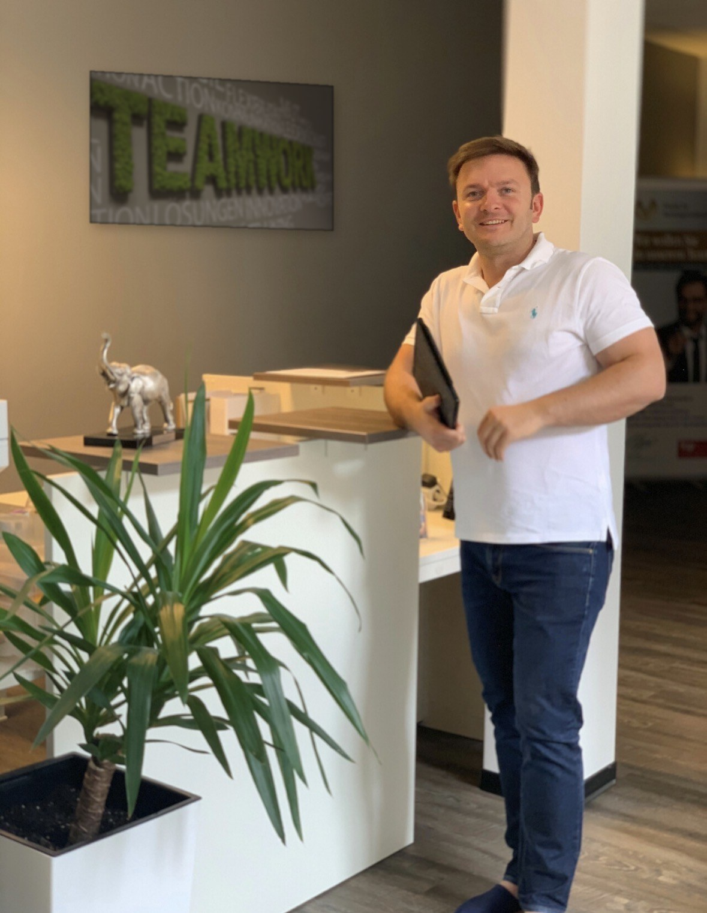

Willkommen bei Team Wachsbleiche
Schön, dass du da bist.
Was passt bei deinen Finanzen schon gut, und wo lohnt sich ein genauer Blick? Finde heraus, womit du anfangen möchtest.
Anna hat dir diese Seite empfohlen.
Persönlich weitergegeben · Beispieldaten, keine echte EmpfehlungHallo, ich bin Kai. Hier lernst du mich und meine Arbeit kennen. Wenn du danach eine Frage hast, schreib mir einfach.
Diese Seite gehört dem Team der Regionaldirektion. Wer dich begleitet, steht fest, sobald du über den persönlichen Link einer Beraterin oder eines Beraters kommst.
Etwa 3 MinutenKostenlos ansehen
Anderthalb Minuten
Deine persönliche Formel zum finanziellen Glück.
Der Film zeigt dir, wie ich auf Finanzen schaue. Danach kannst du das Thema wählen, das dich gerade beschäftigt.
1:28 MinutenTon an empfohlen
Ein Gedanke genügt
Womit sollen wir anfangen?
Was beschäftigt dich gerade? Deine Auswahl legt fest, welchen Bereich du dir zuerst ansiehst.
Tipp einfach auf das, was dich am meisten interessiert.
Dein Schwerpunkt
Dieses Thema möchtest du genauer betrachten.
Du beginnst mit deinem Schwerpunkt und schaust danach auf alles andere.
Etwa 3 Minuten7 Fragen
- 1Sieben kurze FragenEtwa drei Minuten. Du brauchst keine Unterlagen.
- 2Dein Ergebnis ansehenDu siehst, welche Themen du näher prüfen kannst.
- 3Deine Fragen mitbringenWenn du möchtest, schauen wir uns dein Ergebnis zusammen an.

Dein Ansprechpartner
Ich bin Kai. Und ich höre erst mal zu.
Bevor wir über Zahlen sprechen, möchte ich wissen, was du vorhast. Ein eigenes Zuhause? Mehr Geld zur Seite legen? Oder erst einmal wissen, wo du stehst? Du bringst deine Fragen mit. Gemeinsam schauen wir, was zu deinem Alltag passt.
„Ich kann die Betreuung bei Kai Blobel jedem empfehlen, der Wert auf Substanz und Fachkompetenz legt und keine Lust auf heiße Luft hat."Patrice Hempe · echte Google-Rezension 2026
Wenn du möchtest
Lernen wir uns kennen?
Du kannst direkt einen Termin wählen oder mir zuerst eine Frage schreiben. Such dir den Weg aus, der für dich passt.
Ich freue mich darauf, zu hören, was du vorhast.
Dein nächster Schritt
Mit Kai Blobel
Du entscheidest, ob und wie wir Kontakt aufnehmen.
Ich möchte erst einmal schauen
Schön, dass du vorbeigeschaut hast. Wenn später eine Frage auftaucht, findest du mich wieder hier.
Was besprechen wir beim Kennenlernen?
Wir sprechen darüber, was dich zu mir führt und was du erreichen möchtest. Danach legen wir gemeinsam fest, welche Themen wir uns genauer anschauen.